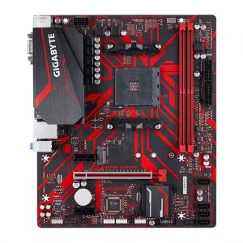

1. O que é hardware? Dê no mínimo três exemplos.
Hardware refere-se aos componentes físicos de um sistema computacional, como placas de vídeo, placas-mãe e unidades de armazenamento. Exemplos incluem:
- Processador
- Placa de vídeo
- Disco

Hardware refere-se aos componentes físicos de um sistema computacional, como placas de vídeo, placas-mãe e unidades de armazenamento. Exemplos incluem:
Software refere-se aos programas e instruções que controlam o funcionamento do hardware. Exemplos incluem:

Um processador é o cérebro do computador, responsável por executar instruções e realizar cálculos. A memória cache é uma memória interna de alta velocidade que armazena temporariamente dados frequentemente usados pelo processador. A velocidade de clock interna é a taxa de operação do processador, enquanto a velocidade de clock externa é a taxa de comunicação entre o processador e outros componentes do sistema.

Uma placa mãe é a principal placa de circuito impresso de um computador, que abriga e conecta todos os componentes do sistema, incluindo processador, memória, armazenamento, interfaces de rede e outros dispositivos.
Uma placa mãe, também conhecida como motherboard, é a peça central do computador onde todos os outros componentes são conectados. É responsável por fornecer energia e comunicação entre os componentes, permitindo que o computador funcione de maneira adequada.
Abaixo está uma imagem de uma placa mãe ASUS modelo PRIME B450M-A/BR:

Para mais informações técnicas, visite o site do fabricante.
A memória RAM (Random Access Memory) é responsável por armazenar temporariamente os dados que estão sendo usados pelo processador.

A imagem escolhida representa a memória RAM Corsair Vengeance LPX, que possui uma conexão DDR4.
A memória Solid State Drive (SSD) é um tipo de armazenamento de dados que utiliza memória flash, proporcionando um acesso mais rápido e uma maior durabilidade em relação aos discos rígidos convencionais.

A imagem escolhida abaixo representa o SSD Samsung 970 EVO, que utiliza a conexão M.2.
.jpg)
O nobreak é um equipamento que tem como função fornecer energia elétrica temporária para os servidores em caso de falhas ou interrupções no fornecimento de energia elétrica, evitando assim a perda de dados e danos aos equipamentos.
O processador escolhido foi o AMD Ryzen 9 5900X, com 12 núcleos e 24 threads.

O processador possui uma velocidade de clock base de 3,7 GHz e uma velocidade de clock boost de 4,8 GHz. Além disso, ele conta com 70MB de cache e suporta memórias DDR4.
Para mais informações técnicas, visite o site do fabricante.